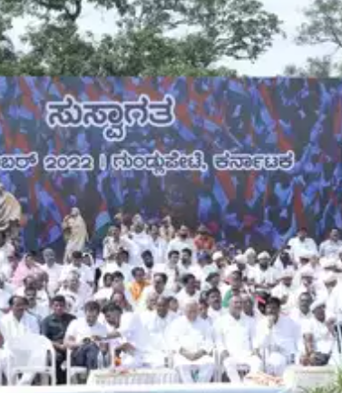
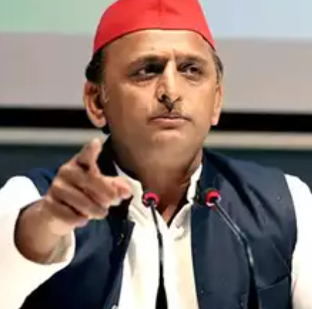

Amit Shah to address first mega rally in Bihar today after JD(U) snapped ties with BJP
p o l i t i c s


Congress leader Siddaramaiah warns BJP against obstructing Bharat Jodo Yatra as it enters Karnataka
Rahul Gandhi leaves meeting in between, goes for jogging: Himanta Biswa Sarma

Despite unfavourable poll results, it has been proved only SP can defeat BJP in UP: Akhilesh Yadav
Maya can join opposition alliance if she’s made PM candidate: BSP spokesperson

Ghulam Nabi Azad launches Democratic Azad Party in Jammu and Kashmir